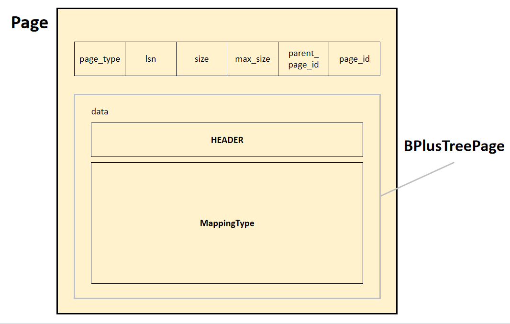

到目前为止，咱们已经完成了存储与索引部分的功能实现，接下来就进入执行层面的内容了。
Task #1 - B+Tree Pages
首先，在本 lab 中，B+ 树的所有节点都以 BPlusTreePage 即页的形式存在，其包含若干元数据。其中，根据所处位置不同，B+ 树的节点又分为内部节点(Internal node)与叶节点(Leaf node)。B+ 树的特点就是 internal node 仅用于索引，leaf node 存放真实数据，故这两者的键值对类型略有不同：
- 前者（
BPlusTreeInternalPage）的 Value 为 child node 的索引； - 后者（
BPlusTreeLeafPage）的 Value 为元组 RID。
这便是第一个 Task 的主要任务——完善这三个数据结构。
BPlusTreePage
基类，包含一些公共变量。
成员变量
page_type_：指明该节点为内部节点还是叶节点，无需强转后判断；lsn_：事务序列号，lab 4 中用到；size_：当前存放的键值对数量；max_size_：当前节点能容纳的最大键值对数量；parent_page_id_：父节点 page_id，用于查找父节点；page_id_：自身所处 Page 对象的 page_id；
这些变量，或者说信息，都是 internal page 和 leaf page 共有的，这总共 24B 的不包含键值对的信息被称为 HEADER。
其相关的成员函数实现起来也比较简单，不再赘述。
btw，尽管名字里都带个 “Page”，但 lab1 和 lab2 的 “Page” 其实是不同的，BPlusTreePage 实际上对应了 BPM 里面 Page 对象的 data_ 部分，因此在访问节点时，首先通过 BPM.FetchPage 方法获取 Page 对象，再将其 data_ 部分 reinterpret_cast 为 BPlusTreePage，最后根据对应的 page_type_ 强转为 Internal/Leaf page。具体数据排布如下图所示：

HEADER 内的 page_id 实际上和外层 Page 对象的 page_id 是相等的。
BPlusInternalPage
内部节点，不存放数据，仅用于索引，且 m 个 Key 对应 m+1 个 Child。基于 lab1 BPM 的实现，所有的 node 都可以通过 page_id 来进行获取，故这里的索引实际上就是 child node 对应的 page_id。
关于其成员函数的实现，除了原本给的，我还添加了以下函数：
Insert(const KeyType &key, const ValueType &value, int index)：在 index 处插入 kv 对，后面所有 kv 对后移一位；Remove(int index)：移除 index 处的 kv 对，后面所有元素前移一位；
这在后续 BPlusTree 的 Insert/Remove 的实现中比较重要。当然，BPlusLeafPage 类中也包含以上两个方法。
BPlusLeafPage
叶节点，存放实际数据，且 m 个 Key 对应 m 个 Value。
根据 B+ 树的性质，所有叶节点同时以链表形式排布，从而支持 range-search。故 leaf page 的 HEADER 还要加上 4B 的 next_page_id，以索引到下一个叶节点。如果是最右边那个叶节点，则该变量为 INVALID_PAGE_ID。
Task #2 - B+Tree Data Structure
本 Task 是本 lab 的核心部分，也是最难的部分，相比于 Task1 仅仅是实现各节点的数据结构，Task2 就要开始真正手撕 B+ 树了。
GetValue(Key)
查操作较为简单，只需根据 Key 从根节点开始不断往下走即可，重点在于找 child，而不涉及多余的操作。根据 B+ 树的特性，对于 \(Page\_id_i\) 对应节点为根的子树中，所有 key \(K\) 均满足 \(Key_i \leq K < Key_{i+1}\)，且作索引的内部节点的第一个 Key 不参与比较。故查找子节点 page_id 所在索引的函数可以实现为：
1 | int GetChildPageIndex(InternalPage *internal_node, const KeyType &key) { |
Insert(Key, Value)
B+ 树的插入规则如下：
若整棵树为空，则新建 root node 并作为 leaf node，进行插入；
反之，根据 key 找到相应的叶节点 src，直接插入，注意叶节点的所有 kv 对均按照 key 递增排序；
若插入后 src 满足 split 条件，进行 node split：
新建一个节点 sibling；
这里注意，新建
BPlusTreePage对象后必须调用其Init()函数来初始化其元数据。将 src 中的后一半 kv 对迁移到 sibling 中，若 src 为叶节点，则还需要修改 src 和 sibling 的 next page id；
若 src 同时也是 root node，则创建一个新的根节点 new root node，插入一个新条目；
反之，在其 parent 中插入一个新条目；
若 parent 因 child split 行为而导致其满足 split 条件，则继续进行 node split，直至不再满足 split 条件；
split 条件：
- 对于 leaf node，在插入后 size = max_size；
- 对于 internal node，在插入后 size > max_size；
实际上 Insert 是一个递归行为，每选择一个 child，就是对一棵新的 B+ 树进行 Insert 操作，故在我的实现中，定义了一个名为 bool RecursivelyInsert(Key, Value, Root) 的函数，其返回值表示的含义为：若为 true，则说明 child 满足 split 条件，由 parent 来执行 child node split，最后告知 parent 的 “grandparent” 其是否满足 split 条件；反之，此节点不进行任何操作，直接返回 false。
在 Insert() 中调用 RecursivelyInsert() 实际上是对 root 进行递归插入，所以如果返回值为 true，需要进行 root 的 split，相比其它节点而言多了一个新建 new root node 的操作。
有个需要注意的点是，这里的 B+ 树仅支持 unique key，对相同 key 的重复插入会被认为是插入失败。
基于上述讨论，总体过程大概如下所示：
1 | bool Insert(const KeyType &key, const ValueType &value) { |
Remove(Key)
删除规则和插入大体类似：
- 根据 key 找到相应的叶节点 src；
- 若删除后 src 满足 merge 条件，则进行 node merge：
- 先看看自己的左右兄弟中任何一个是否能借一个 kv 对，条件是其借出后不会使得自身满足 merge 条件；
- 若能借到，则修改 parent 相应条目；
- 反之，挑选一个 sibling，将它俩合并，规则为，右侧的 node 将其所有 kv 对迁移到左侧的 node 中，并删除 parent 中相应条目；
- 若父节点因 child merge 行为而导致其满足 merge 条件，则继续进行 node merge，直至不再满足 merge 条件；
merge 条件：
- 对于 root node
- 若为 leaf node，删除后 size = 0；
- 若为 internal node，删除后 size = 1；
- 对于非 root node
- 若为 leaf node，删除后 size < min_size；
- 若为 internal node，删除后 size <= min_size；
min_size = max_size / 2
它同样是个递归行为，我也定义了一个 RecursivelyRemove() 函数，流程和 insert 大体一致，不同之处在于 sibling 的挑选，需要考虑当前 child 是否为 parent 最左侧/最右侧的 child。
Task #3 - Index Iterator
这一 Task 相对而言简单许多，首先需要我们完善 IndexIterator 类，实现其四个运算符（*, ++, ==, !=）以及一个 IsEnd() 函数，还需要我们完善 BPlusTreePage 类中的 Begin() 与 End() 函数，其分别返回一个 IndexIterator。总体而言还是不难的。
IndexIterator
由于 IndexIterator 是遍历 leaf node 的迭代器，故需要记录当前 kv 对的一些信息，如所在的 leaf page 以及当前 kv 对所在下标，即：
1 | BPlusTreeLeafPage<KeyType, ValueType, KeyComparator> *cur_page_; |
IsEnd() 只需判断当前 Page 指针是否为 nullptr 即可。
== 运算符不仅需要判断两个迭代器所处的 Page 的 page_id 及 index 是否相等，还需要在最开始加上 IsEnd() 的判断。
Begin / End
Begin 有两个重载函数，一个是无参 Begin()，只要找到 B+ 树中最左边那个叶节点即可。
另一个是 Begin(Key)，返回的 IndexIterator 需满足对应的 key \(K <= Key\)，这与之前实现的 GetValue 有异曲同工之妙。
Task #4 - Concurrent Index
这一 Task 要求我们在原先的基础上，令 B+ 树支持并发操作，这里需要用到的一个思路就是 Lock Crabbing。
如果要实现不冲突的并发操作，最朴素的想法是从 root 开始，一直到 leaf 这条路径上的所有 node 依次上锁，完成递归操作后依次解锁，直至所有锁都释放。
但这样就将并发变成了纯粹的 Serialized Operation，还不如直接对整个 B+ 树上一把大锁。实际上有些 node 可能并不需要这把锁，也就是说事务的这次 Insert/Remove 操作并不会对该 node 造成任何影响，完全可以直接解锁，让其它事务尽快获得该 node 上的锁，从而提高吞吐率。而对于 GetValue 操作，目的是读取 leaf node 上的数据，internal node 在索引完后就失去了其作用，因此也可以直接解锁。
那么问题来了，如何判断当前 node 需不需要提早解锁呢？在 B+ 树中，如果一个 node 无论是否 Insert/Remove 某一 kv 对都不满足 split/merge 条件，那么其 parent 也不会因为本次操作而改变自身所存放的 kv 对数量，我们就认为这样一个 node 是 Safe 的。如果在 Insert/Remove 操作中，某一 node 所引导的 child node 是 safe 的，那么无论什么情况，本次操作都不会对该 node 及其所有祖先产生影响，可以直接解除从 root 到该 node 的所有锁。
于是之前的 Insert/Remove 操作流程就变成了：
- 找到 child node；
- 判断是否 safe，若是，则解锁，反之，等待操作结束后马上要退出递归了再解锁；
- 对 child node 进行递归操作；
- 操作结束后，根据是否提前解锁来判断此时是否需要解锁；
- 返回至上层；
不能直接通过判断 child node 是否 safe 来判断有无提早解锁，因为 child node 可能在操作的过程中 size 发生了改变。实际上，Insert/Remove 函数的参数中有一个名为
Transaction的变量，其内部有一个双端队列(std::deque)用来维护持有锁的情况，从队首到队尾依次为 root 到 leaf 这条路径上的所有BPlusTreePage，提前解锁相当于pop_front()。而当操作结束后，若当前锁队列非空，说明未提前解锁，故需要解锁，相当于pop_back()。这样加就能够保证递归返回时，所有子孙后代都已经解锁，若当前锁队列非空，说明当前 node 一直到 leaf 这条路径上都没发生过提前解锁事件，队列末端必定为当前 node。
我这里是上了一把大锁，防止 root node 出现改变的情况，在锁队列中表现为一个空指针，即如果待解锁页面为 nullptr，则说明需要把大锁给解锁了。
当然也可以改为持续获取 root node，直至其为真正的 root node（事务首次访问到 root 时尝试上锁，然后等待至持有时 root 可能已经发生变化，即当前 node 已不为 root，需要重复之前的操作），但经过分析，这和上一把大锁没有区别：
- 若 root 不会发生变化，说明到 leaf 的这条路径上必然有一个 node 是 safe 的，会直接将大锁解除；
- 反之，大锁会在 root page id 完成更新后解除，若采用法 2，解锁时机并没有发生变化，下一个事务依然会在同一时刻获取到最新 root node 的锁；
总结
课程组很贴心地为我们提供了 b_plus_tree_printer 这样的工具，生成 .dot 文件后可以直接复制到这个网站上进行图像生成。当然，也可以直接在浏览器上运行命令行。将 B+ 树可视化，更方便我们 debug。
这个网站也为我们提供了 B+ 树各个操作的可视化过程，适合入门学习。
本 lab 的实现难度还是挺大的，debug 过程非常吃力，尤其是 GradeScope 不提供测试代码，打印 LOG 还有概率发生 error，跟 6.824 直接公开测试用例的做法比起来还是对小白恶意更大一些，不过手撕完 B+ 树的那种神清气爽还是前所未有的。
当然，还是要善用 BUSTUB_ASSERT 进行防御性编程。